Практичний досвід · журнал «ДентАрт» 2018 №2
Видалення білих плям і відновлення об'єму
WHITE SPOTS REMOVAL AND VOLUME RESTORATION
Грегорі Камалеонте(м. Марсель, Франція), www.styleintaliano.org
Білі плями – досить серйозна проблема, тому що в багатьох випадках вони являють собою поєднання естетичної вади і порушення анатомічної цілісності, через що істотно збільшується час, потрібний для застосування занадто інвазивних методик реставрації.
У випадку, розглянутому в цій статті, ми бачимо порушення естетики усмішки через наявність великої кількості плям на емалі, які займають більшу частину вестибулярної поверхні зубів. Особливо це помітно на зубах 11 і 21, природний колір яких прихований опаковим шаром демінералізованих зон. Тому тут велика спокуса вдатися до інвазивної техніки, такої як фіксація адгезивних керамічних вінірів.
Точний аналіз клінічної картини разом з гарними знаннями методів відбілювання, ерозивного препарування з подальшою інфільтрацією дозволять значно поліпшити ситуацію. Композити, призначені для прямих реставрацій, у підсумку будуть використані лише в межах шару поверхневої емалі, який потім буде відполірований.
У цьому випадку пацієнтка попросила усунути білі плями на верхніх фронтальних зубах. Під час клінічного та фотографічного обстеження було виявлено втрату емалі з вестибулярного боку, зумовлену наявністю білих плям. Після ерозійно-інфільтраційної обробки заплановано відновлення тривимірної морфології за допомогою прямої композитної реставрації.
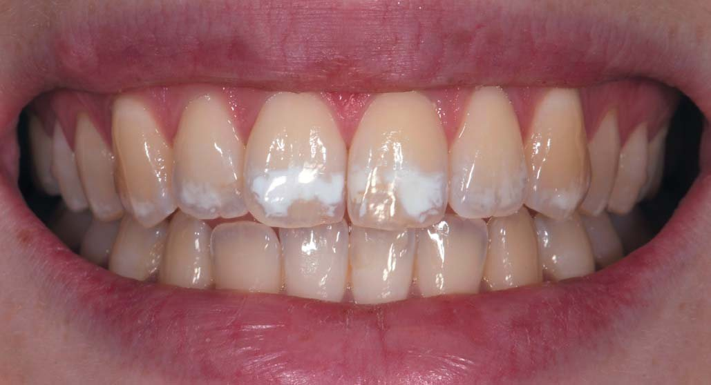
Початковий вигляд усмішки. На зубах є плями і ділянки зі зміненим кольором. Як перший етап лікування було виконано відбілювання.
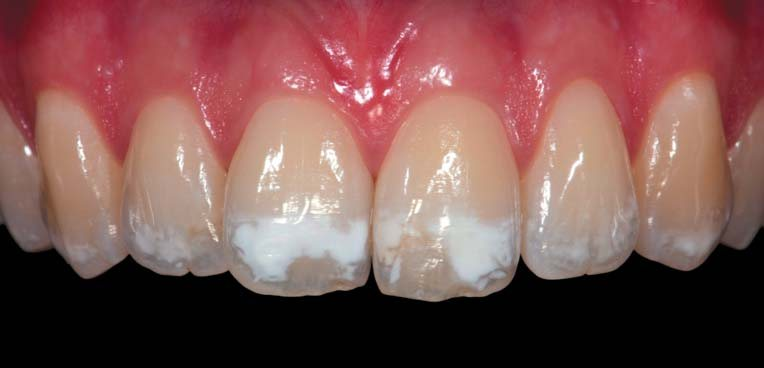
На світлині, отриманій з використанням ретракторів і контрастора, видно, що більші білі плями є на зубах 11 і 21.
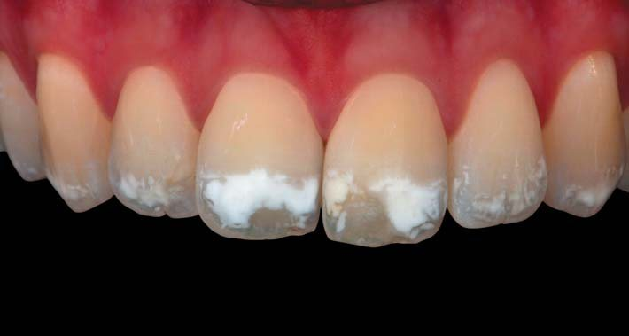
На фото з ефектом перехресної поляризації можна оцінити справжні ступінь опаковості і глибину уражених ділянок.
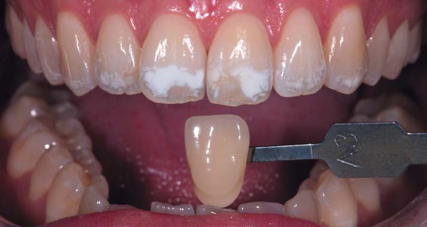
Перший етап лікування – відбілювання для поліпшення кольору в цілому.
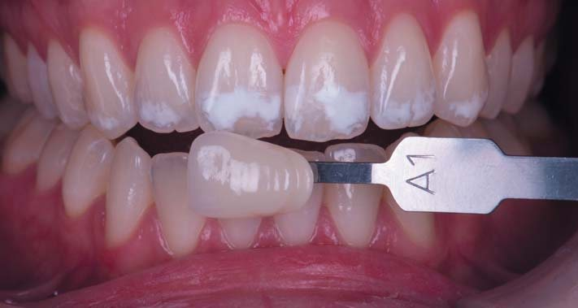
Через 3 тижні відбілювання колір зубів поліпшився. Можна було переходити до процедури ерозійної обробки та інфільтрації.
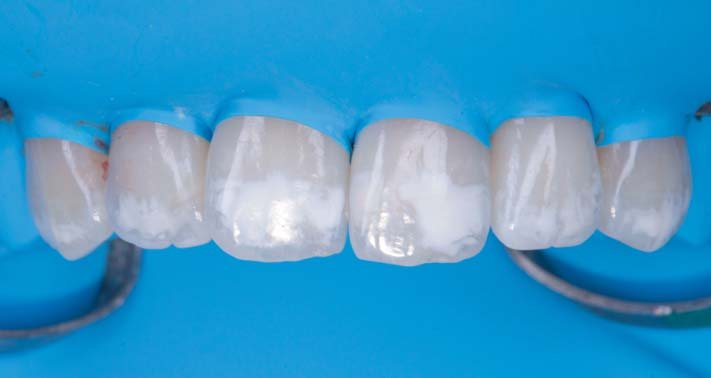
Спочатку зроблена ізоляція зубів 13-23 рабердамом, встановлені кламери на зубах 14 і 24.
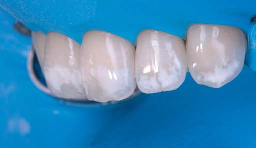
Рабердам уведено в зубоясенну борозенку для отримання великої сухої робочої зони, а також захисту ясен від матеріалів, що використовуються під час процедури.
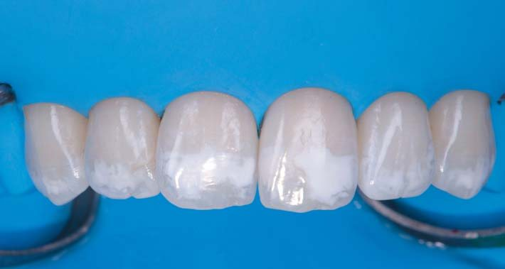
Виконана акуратно піскоструминна обробка ураженої білої ділянки оксидом алюмінію зернистістю 50 мкм.
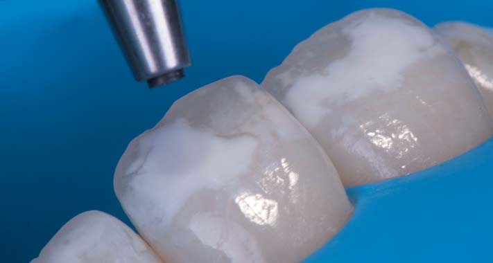
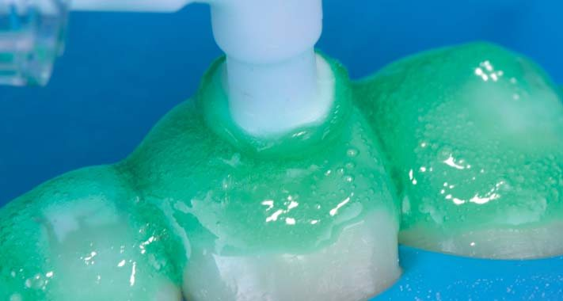
Вигляд збоку – візуалізується втрата емалі, зумовлена наявністю великих білих плям і піскоструминною обробкою.
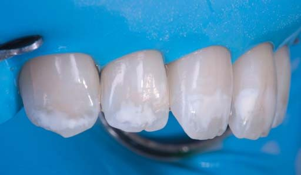
DMG Icon etch (15% соляна кислота) втиралася протягом 2 хвилин, після чого змита і поверхня висушена протягом 30 секунд.
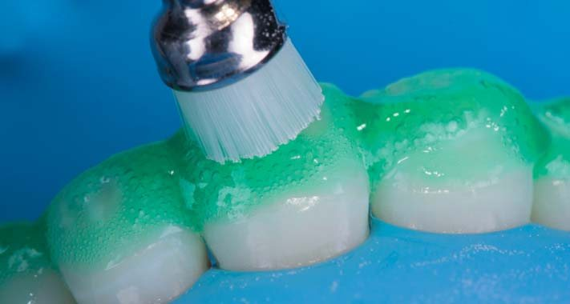
Покрита плямами поверхня оброблена профілактичною щіткою, встановленою в ендодонтичний реципрокний наконечник.
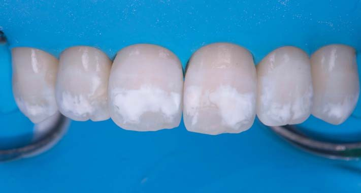
Після промивання Icon etch і просушування.
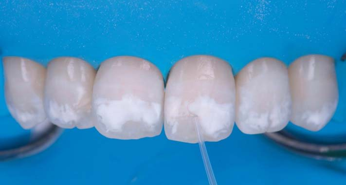
Нанесено Icon dry, експозиція 30 секунд.
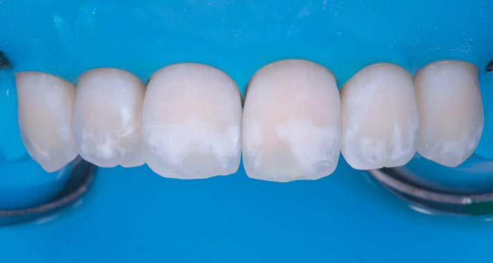
Білі плями було, як і раніше, видно, і тому процедуру слід було повторити.
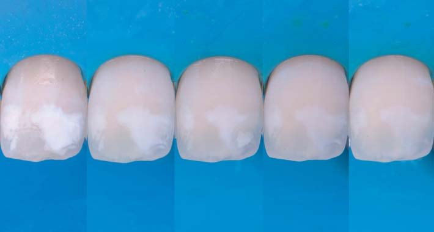
У цьому випадку процедуру довелося повторити 4 рази, до зникнення плям.
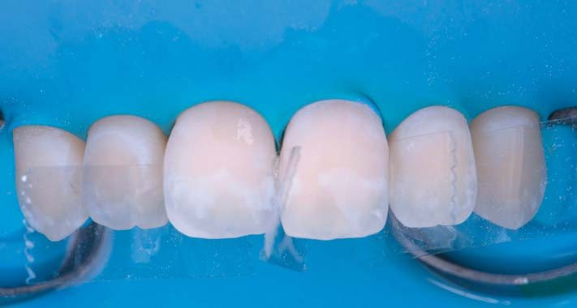
Перед нанесенням інфільтраційної смоли було встановлено матриці для запобігання склеюванню зубів один з одним.
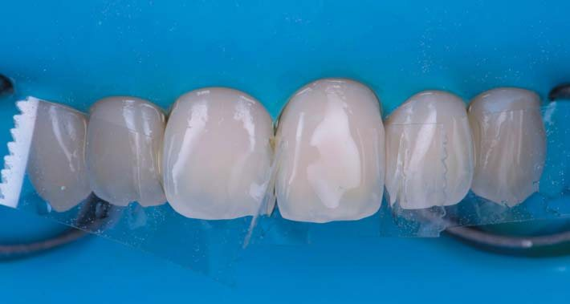
Далі була нанесена інфільтраційна смола Icon на 3 хвилини, полімеризація протягом 1 хвилини.
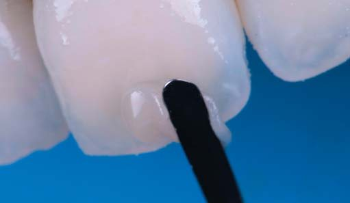
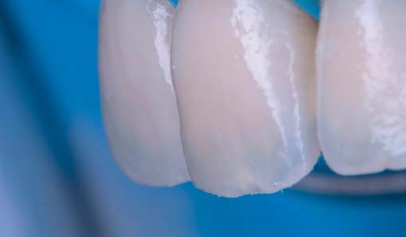
Вигляд збоку – видно втрату емалі. Цю проблему вирішено додаванням композитного матеріалу для прямої реставрації.
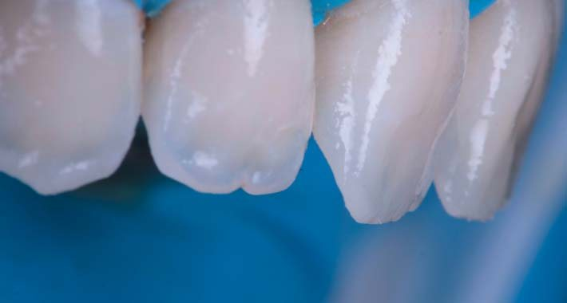
Композит для емалі наносився за допомогою LM Arte Applica Twist.
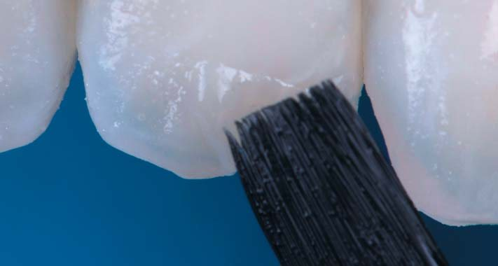
Композит для емалі адаптувався за допомогою Compobrush.
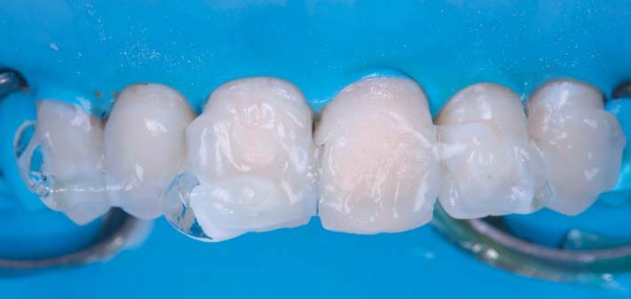
Завершальна процедура світлозатверджування виконувалася з використанням гліцеринового гелю, щоб уникнути утворення шару, інгібованого киснем.
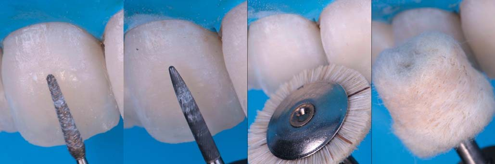
Процедура фінірування і полірування виконувалася за допомогою набору борів Finishing Style, щітки з козячої вовни і полірувальною пастою Diamond Twist.
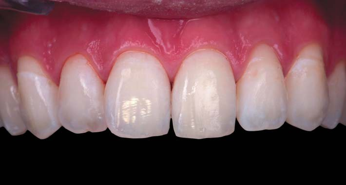
Остаточний результат після зняття рабердаму.
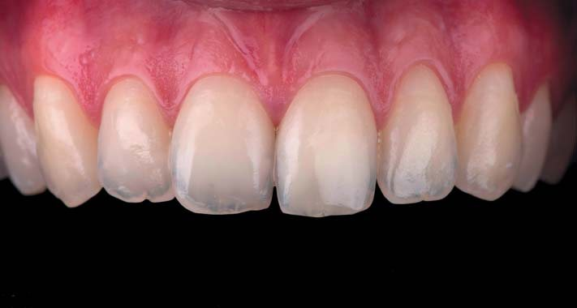
Остаточний результат через 3 дні. Зуби регідратовані.
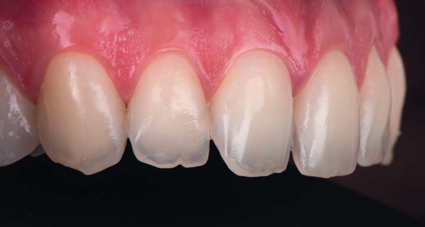
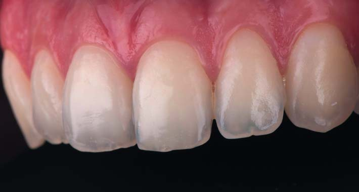
Остаточний результат через 3 дні. Вигляд збоку – видно, що об'єм емалі відновлено.
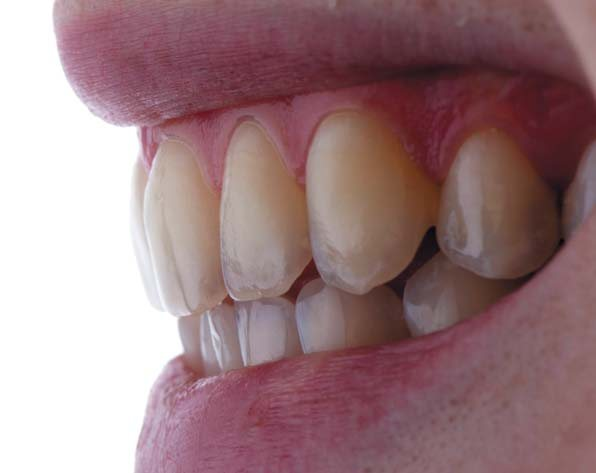
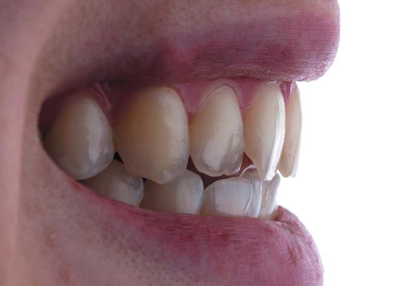
Остаточні результати через 9 місяців після лікування.
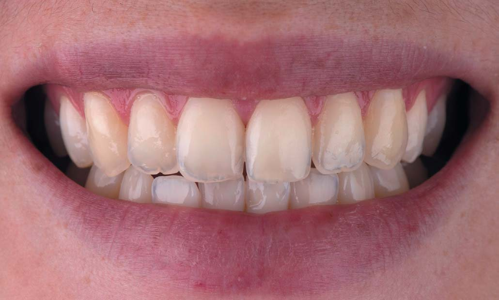
Вид усмішки через 9 місяців після лікування.
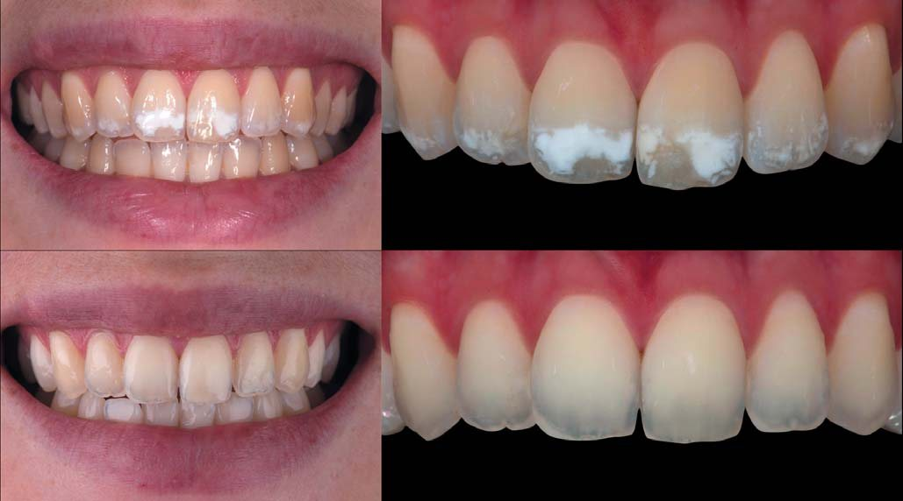
Світлини у форматі «до і після». З естетичної точки зору, на фінальних кадрах видно вельми задовільний результат. Фото у перехресно-поляризованому світлі все ж переконливіше демонструють зменшення опакових плям. Зверніть увагу на те, як вони зникають.
Висновки
Будь-який процес відновлення зовнішнього вигляду усмішки передбачає здійснення доступної, відтворюваної і мінімально інвазивної процедури, яка гарантує прогнозований і задовільний результат. У цьому випадку можна говорити про застосування загальної методики, в якій поєднуються кілька підходів, щоб інвазивність була на мінімально можливому рівні.
Література
- Manauta J, Salat A. Layers: an atlas of composite resin stratification. Quintessence 2012.
- Weisrock Gauthier, Brouillet Jean-Louis. Le champ operatoire evidemment. L'INFORMATION DENTAIRE n° 42 – 3 decembre 2008.
- Devoto W, Saracinelli M, Manauta J. Composites in every day practice: How to choose the right material and simplify application techniques in the anterior teeth. JEAD, Jan. 2010.
- Paris JC, Faucher AJ. Le Guide esthetique: comment reussir le sourire de vos patients. Quintessence international 2003.
- Faucher AJ, Ortet S, Camaleonte G, Weisrock G, Etienne O, Paris JC. Reussir les composites anterieurs au quotidien. Quintessence 2017.
- Attal JP, Atlan A, Denis M, Vennat E, Tirlet G. L'infiltration en profondeur: un nouveau concept pour le masquage des taches de l'email (partie 1). L'information dentaire n°19-15 mai 2013: 74-79.
- Attal JP, Atlan A, Denis M, Vennat E, Tirlet G. White spots on enamel: treatment protocol by superficial or deep infiltration (part 2). Int Orthod. 2014 Mar;12(1):1-31. Feb 3. English, French.
- Tassery H. Lesions amelaires: quand et comment agir? Clinic 2009;30:72-74.
- Salat Anna. http://styleitaliano.hime.host/post-orthodontic-white-spots
- Clement Marie. http://styleitaliano.hime.host/infiltrate-and-restore
- Dan Lazar. http://styleitaliano.hime.host/four-levels-of-inversion-for-rubber-dam-isolation/
- Manauta Jordi. http://styleitaliano.hime.host/polishing-lifelike-composite/
- Monteiro Paulo. http://styleitaliano.hime.host/the-step-by-step-in-finishing-and-polishing-part-i/
Статтю переклали і підготували в компанії CRYSTAL Pharma.